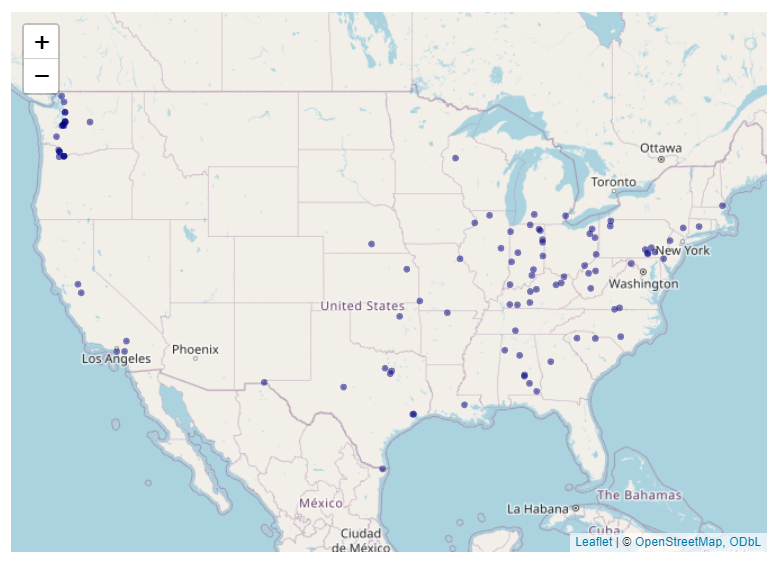
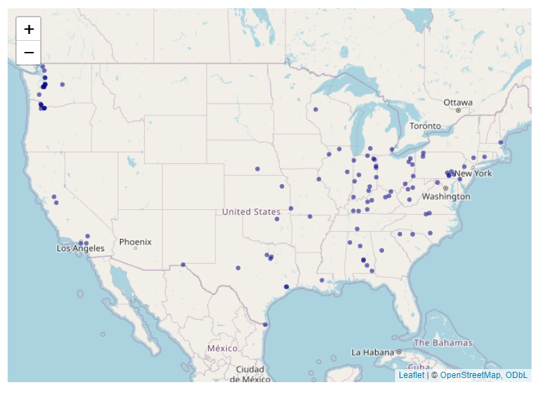

A Brief Intro to Using EJAM in RStudio
After EJAM has been installed (and can access the datasets), here’s how you can run an EJAM analysis and view results right away:
Analyze Places with ejamit()
If you already have a spreadsheet with columns called lat and lon, you can just do this and EJAM will prompt you to navigate to and select the file and set the radius (from RStudio):
out <- ejamit()If you want to try some test data first:
Map with ejam2map()
This creates an interactive map. Click a point on the map to see a popup with details about people near that point.
out <- testoutput_ejamit_100pts_1miles
# ejam2map(out)
# or
mapfastej(out$results_bysite)Report via ejam2report()
out <- testoutput_ejamit_100pts_1miles
ejam2report(out)
Summary table of environmental and demographic indicators as raw value, average and percentile (in State and in US overall)
 


Barplot comparing demographic indicators as ratios to US average
Spreadsheet from ejam2excel()
out <- testoutput_ejamit_100pts_1miles
ejam2excel(out, launchexcel = T, save_now = F)
Excel output showing 1 row per site and 1 column per indicator such as total population nearby
More Examples
Select Places to Analyze
Use one point
pts <- data.frame(lon = -92.380556, lat = 31.316944)Use a few points
sitepoints2 <- data.frame(
lon = c(-92.1, -91.8),
lat = c(34.8799123, 30.2906971),
sitenumber = 1:2
)Use test points in examples that comes with the package
EJAM comes with examples of points you can use to try things out:
testpoints_10
#> lat lon sitenumber
#> 1 30.97740 -83.36900 1
#> 2 32.51581 -86.37732 2
#> 3 42.23498 -88.30541 3
#> 4 33.87001 -118.37778 4
#> 5 34.01493 -118.20539 5
#> 6 40.73110 -74.17307 6
#> 7 37.81144 -121.29348 7
#> 8 44.85387 -93.04713 8
#> 9 41.18661 -111.94904 9
#> 10 40.71239 -74.58470 10
testpoints_100 |> head(2) # data.table, in this package
#> lat lon sitenumber sitename
#> 1 40.66478 -74.89137 1 Example Site 1
#> 2 38.39657 -98.70086 2 Example Site 2
sitepoints100 <- data.table::copy(testpoints_100) # [1:5, ]
head(sitepoints100, 3)
#> lat lon sitenumber sitename
#> 1 40.66478 -74.89137 1 Example Site 1
#> 2 38.39657 -98.70086 2 Example Site 2
#> 3 40.34971 -79.84964 3 Example Site 3Create a random sample of points representative of the average facility, average resident, or average area
You can create a set of random points with function
testpoints_n() that can be weighted to represent the
average resident, average regulated facility, average point on a map
weighted by square meters, etc. See more details in the documentation of
the function testpoints_n().
?testpoints_nCreate random test data points in States of LA and TX
# p1k <- testpoints_n(1000)
# mapfast(p1k)
mapfast(testpoints_n(300, ST_needed = c('LA','TX'), weighting = 'bg'))
#> Warning in validateCoords(lng, lat, funcName): Data contains 2 rows with either
#> missing or invalid lat/lon values and will be ignored
# weighting = "frs" better represents regulated facilities,
# but requires loading the (large) frs datasetUse a table of lat/lon coordinates from a spreadsheet xlsx or csv file
The first row should be column names including lat and lon, or something that can be interpreted as that - see latlon_infer()
testjunk <- file.path(tempdir(), 'testjunk.csv')
write.csv(data.frame(LONG = c(-92.1, -91.8), Latitude = c(34.8, 30.2), ejam_uniq_id = 1:2), file = testjunk, row.names = FALSE)
sitepoints2 <- latlon_from_anything(testjunk)
sitepoints2Interactively select your own file of lat,lon coordinates, without typing the file name
From RStudio, you can use EJAM functions to interactively select a file from your folders, to upload a spreadsheet (.xlsx or .csv) with columns called lat and lon in the first row as the header row, and then one row per point.
y <- read_csv_or_xl()
names(y)
head(y)
# or
# x <- ejamit(radius = 2)
# 2 mile radius, and
# prompts you to select spreadsheet with lat,lon values of pointsMap your sites before analyzing them
mapfast( testpoints_100) # input to EJAM
mapfastej(testoutput_ejamit_100pts_1miles) # output, results of EJAMYou can see a map of random blocks in a single State, for example:
if (exists("blockid2fips")) {
pts <- testpoints_n(1000, weighting = 'blocks', ST_needed = "LA")
mapfast(pts, radius = 0.1)
}
#> loading blockpoints datasetPick a Radius
You can specify the radius in miles. EJAM will analyze all residents within that many miles of each point (site).
radius <- 3 # radius (in miles). 5 km = 3.1 miles, 10 km = 6.2 milesConvert between miles and kilometers
If you know you want to analyze for 5 kilometers, you can turn it into miles with something like
convert_units(5, 'km', 'miles')
#> [1] 3.106856Analyze your Sites in 1 step with ejamit()
out <- ejamit(testpoints_100, radius = 1) # 1 mile radius around each of 100 test/example points
# help("ejamit")Map the EJAM Results
Popups in the map show key stats for residents near each site.
out <- testoutput_ejamit_100pts_1miles
mapfastej(out$results_bysite)
# help("mapfast")See Results as a Spreadsheet (this Launches Excel)
ejam2excel(ejamit(testpoints_10, radius = 1), launchexcel = T, save_now = F)
# table_xls_from_ejam() is another name for ejam2excel() Save Results as a Spreadsheet file
ejam2excel(ejamit(testpoints_10, radius = 1), save_now = T)Documentation of Functions and Data
- See the README on GitHub